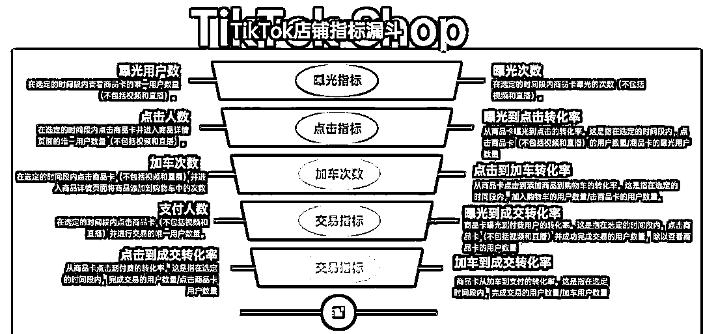
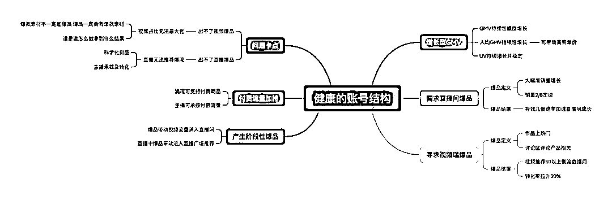

来源：https://xikbp3he4xj.feishu.cn/docx/SbxSdhhJuozHrTxzA6ecXFdInBe
0基础做TikTok跨境电商 月出万单 0-1保姆级教程
第一步：准备好营业执照/个体工商户 如果要是个体工商户要满足六个月+需要提供第三方资质 或者买店铺都可以
第二步：https://seller.tiktokglobalshop.com打开TikTok跨境电商的链接，如果本土店铺的话，点击这个链接：https://seller.tiktok.com/
第三步: 填写你的手机号账号密码
第四步:填写你的地区 选择普通入驻 公司主体选择内地
第五步:填写你的营业执照
第六步:填写中国内地身份证
第六步:填写店铺基础信息
第七步:填写店铺基础信息
第八步:审核中 一个营业执照可以开两个小店 第二个小店重新进入链接在登入一次就好了
第九步:开始店铺运营完成店铺的所有设置（保证金 退货地址 官方账号 上传商品）
保证金退店铺的时候可以选择退回派安盈或者对公都可以 收款用第三方的pingpong/派安盈或其他第三方都可以 大差不差
二,新店铺必做的十项设置
第二项：缴纳店铺保证金
💡逾时未缴纳保证金将会对您的正常经营活动带来影响：
缴纳入口：
PC端登录商家后台资产保证金，进入到保证金页面。
缴纳流程：
步骤一：在保证金页面最上方，点击“充值”，进入到充值页面；根据提示输入充值金额，系统直接进入充值收银台，根据不同的支付渠道会明确告知汇率及手续费等详细信息。
步骤二：进入结算收银台，选择付款方式。
中国跨境商家可以直接用人民币完成支付，在支付收银台上会根据实时汇率进行计算。可选的付款方式会根据您的公司所在地区有所不同，请参考下表：
步骤三：点击付款，页面跳转到支付方式选择页面，请选择您适用的支付方式完成付款。付款成功后，页面会提示充值成功。
📌
注意事项：
第三项：订单提醒
💡打开提醒，有助及时通知订单。
第四项：AI对话翻译
💡打开之后就不用担心翻译问题啦！
第五项：机器人客服
💡订单很多或者在休息的时候可以设置机器人客服，可以缓解24小时回应率的压力。
第六项：收款账户
💡
收款是一定要绑的，不然你没有办法取出这笔钱。
目前支持两种类型的绑定模式：
①TikTok商家家中心
②我的账号里的“商家资料”
③选择支付信息
④绑定结算账号
第三方收款软件绑定相关指引：
Payoneer：https://bytedance.feishu.cn/docx/doxcnMtPYn57mT1G0bsz6XzPf7g
Pingpong：https://bytedance.sg.larkoffice.com/file/ZGlMbTJRuoVmuyxkz2flogyAgIg?from=from_copylink
LianLian Pay：https://global.lianlianpay.com/guide/ttssellercenter_bindCard
Airwallex：https://ij1df733634.sg.larksuite.com/docx/QmdbdJbyZoNbdTx5h9PlL3BYgHd?from=from_copylink
万里汇：https://bytedance.sg.larkoffice.com/docx/Qypgdb1YzodT06xrq1GlAvuygRf?from=from_copylink
第七项：飞书绑定
💡
绑定飞书可以更好的了解到官方的资讯。
已有飞书团队绑定TikTok店铺
若需要使用已创建的飞书团队绑定 TikTok 店铺，请在绑定账号的飞书登录流程中使用飞书团队超级管理员手机号登录。登录后，可查看到已创建的飞书团队列表，点击“绑定”，完成绑定操作
注意事项：
一个 TikTok Shop店铺只能绑定唯一的飞书团队，一个飞书团队可以绑定多个 TikTok 店铺。
仅限飞书团队超级管理员操作 TikTok 店铺绑定。
使用飞书时务必选择绑定 TikTok 店铺的飞书团队，否则无法查看到官方社群信息。
第八项：妙手绑定
第九项：TikTok账号绑定
💡目前平台仅支持一个国家开通一个店铺，每个店铺可绑定当地的TikTok账号为5个（1个官方达人和4个渠道达人）
官方账户绑定：
渠道账号绑定：
官方账号
① 官方账号以【店铺】形式展示店内商品，且可以使用店铺装修功能进行店铺营销。
② 最多可以绑定1个官方达人。
③ 用户名或昵称需与店铺名称保持一致。
① 渠道账号以【橱窗】形式展示店内商品，且需手动添加商品至账号橱窗。
② 最多可以绑定4个渠道达人。
③ 渠道账号不限制命名。
注：一个达人只能被一个商家绑定，并且在绑定后，1天后才能解绑。
找对标
产品 模式 品牌 相比较我们有优势的 都要圈选
优先级 ：一级类目 垂直品类 细分单品
第一步 ：现在小店榜单里直接锁定头部
🦄
一般销售额高的往往为高客单价 销量高的往往为低客单价
销售额前十
销量前十
小风扇前十 依旧按照按照销量与销售额
历史销售额最高排序 前五 （三家核心竞争对手 1.七天数据良好 2.历史销售额跟销占比都靠前）

单月销售额185亿越南盾 550万人民币 11.35万单
❗
调研平均客单价是为了算利润+了解这个品类在市场的平均客单价 平均客单价为48.45 越南盾为170万
销售额：33.86+17.88+8.89+8.72+8.19=77.54亿越南盾 人民币 220w左右
销量 ：32699
top5平均客单价：23.5w越南盾 67人民币
❗
调研TOP5的商品逻辑是 基本上店铺只有产品爆了才会有利润 产品没爆其实其他的品的销量都是打平或者亏钱的 所以 我们调研top5的产品的选品逻辑+了解他们一个产品挣了多少钱 单对标此刻是品牌店铺 所以综合数据较完善
❗
关于上新频率 其实对于服装女装要求比较高3c主要是要在竞价上靠前
❗
总结模式：
店铺类型为本土店 GOOJODOQ VN品牌，
总结打法：
店铺基本不投放 吃品牌自然流 80%靠达人 每个月新增2000+合作达人 相当于要有5-10个达人运营 基本团队重达人为主 11.35w 单 4.67万单
整体达人：达人销量占整体68%是达人出单 达人销售额占比 占比76%
实际达人：达人销量占整体41%是达人出单 达人销售额是240万 占比43%
商品卡销量占比20% 商品卡销售额占比10%
自营销量：占比12% 自营号销售额占比13%
剩下的应该就是投流 投流占比34% 其他占比66%
总结模式：投流34% 达人43% 商品卡自然流10% 自营号13%=100%
总结成本 ：
人力：团队我按照15个人来算 10个达人运营+1个店铺运营+打包发货财务这些，人员成本达人运营6000 店铺运营8000 其余按照两万人民币算 人力成本估算在10万左右 整月销售额 550w
前五单品销售额（只按照前五算）
单品1:风扇：
定价122-134人民币按照130来算 30天1w单 风扇一个月130万的销售额
风扇成本：
40块钱+2块钱包材+5块钱本土运费 整体按照50块钱整体成本 单品80万的利润
单品2:耳机 ：
定价 36-45 按照40来算 30天1.65w单 耳机66w销售额
耳机成本： 整体成本25块钱+本土备货包材30块钱 16.5w利润
单品3:耳机+音响+手表 ：
达人专属链接 暂时先不算 成本浮动太大
单品4:充电宝
定价99.9人民币 一个月3300单 33w销售额
充电宝成本：整体成本50块钱（产品+包材+本土备货）16.5w利润
单品5:风扇：
定价122-208 按照165算 2509单 41.3w销售额 达人专属链接
风扇成本：一单利润还是50 一单赚115 一共2509单 28.8w利润
前五商品销售额占比240+单品3x 预估占比整店铺60%左右（计算就按照240来算）
30天前五商品利润预估：80+16.5+16.5+28.8 141.8w利润 销售额240w
30天前五商品毛利率预估： 毛利额：240-140=100w
毛利率=（毛利额/销售额）*100% （100/240）*100%=41.67%
前五占比整店铺60%的GMV 同样按此毛利来算就是 550w*41.67%=229.18w 投流成本181.5w
前台毛利229.18w-10%达人佣金-10w团队-181.5广告费用=9w纯利润 房屋水电一算 加样品费用，基本平掉了
总结基本上这个月品牌没有盈利，但是品牌整体规划在明年的3月份，现阶段对于品牌来说疯狂种草 广告直播疯狂收割 明年忘记的时候 一把打穿了 总结团队优势 有品牌 有达人团队 有投流团队，产品性价比高 店铺权重高 隐性品牌人群资产高 不清楚5A到底做了多少蓄水
另外团队有格局 明年三月份风扇旺季基本上3-8月份是大利润期
对于普通人来说 跑品打白牌就行 整体投入成本没有那么高，利润来的也快 从终局来说 明年这个3-8月份品牌利润肯定是爆掉的 但是白牌永远就是3个月的生命周期
👍
竞争优势分析
头部起步更早 投入更大，所以我们不可能一朝一夕就成为行业头部 要打持久战，因为竞争对手在今年已经做了大量的准备工作，而我们的团队才刚刚建立很难一步迈很大
2024.12-2025.12 我们要
第一个阶段 敌之战略进攻 我之战略防御 运动为主 游击为辅
第二个阶段 敌之战略保守 我之准备进攻 游击为主 运动为辅
第三个阶段我之战略反攻 敌之战略退却 运动为主 阵地游击为辅
单月销售额7.6亿越南盾 21.7万人民币 4938单
❗
调研平均客单价是为了算利润+了解这个品类在市场的平均客单价 平均客单价为40.5 越南盾为14万
销售额：4.32亿+1.51亿+4729.00万+1756.60万+507.50万=6.52亿越南盾：折合人民币 ：18.5w左右
销量： 4095
top5平均客单价：15.8w越南盾 45人民币

毛利预估：
单品一销售额：53-68rmb 折中60 销量2506单 150360RMB 销售额
单品一利润：20块钱+本土运费5 单品利润35块 87710毛利
单品二销售额：37-50块钱rmb 折中42 销量1210 50820销售额
单品二利润：产品20块钱+本土运费7块钱 单品利润15块钱 18150毛利
单品三销售额 76-85rmb 折中80块钱 销量165 13200rmb销售额
单品三利润：产品成本30+本土运费5 单品利润 40 6600毛利
单品四销售：定价28.07-36 折中32 销量192 6144销售额
单品四利润：20块钱成本+本土运费5块 单品利润7块 1344毛利
单品五销售额：定价65 rmb 销量22单 1430销售额
单品五利润：28块钱+五块钱运费 单品利润32块钱 704销售额
❗
总结模式：店铺类型为本土店Thienduong dientu VN品牌，
总结打法：店铺基本不投放 吃品牌自然流 51.68%靠达人 每个月新增600+合作达人 相当于要有2-3个达人运营 基本团队重达人为主 4938单 2552单
整体达人：达人销量占整体51%是达人出单 达人销售额占比 占比56%
实际达人：达人销量占整体51%是达人出单 达人销售额是21.9万 占比55%
商品卡销量占比48% 商品卡销售额占比44%
自营销量占比0% 自营号销售额占比0%
总结模式：投流1% 达人55% 商品卡自然流44% 自营号0%=100%
前五商品毛利预估：
单品一销售额：53-68rmb 折中60 销量2506单 150360RMB 销售额
单品一利润：20块钱+本土运费5 单品利润35块 87710毛利
单品二销售额：37-50块钱rmb 折中42 销量1210 50820销售额
单品二利润：产品20块钱+本土运费7块钱 单品利润15块钱 18150毛利
单品三销售额 76-85rmb 折中80块钱 销量165 13200rmb销售额
单品三利润：产品成本30+本土运费5 单品利润 40 6600毛利
单品四销售：定价28.07-36 折中32 销量192 6144销售额
单品四利润：20块钱成本+本土运费5块 单品利润7块 1344毛利
单品五销售额：定价65 rmb 销量22单 1430销售额
单品五利润：28块钱+五块钱运费 单品利润32块钱 704毛利
整体利润预估
前五单品销售额 ：150360+50820+13200+6144+1430=221954销售额
前五单品毛利预估 ：87710+18150+6600+1344+704=114508毛利
预估人力成本：
2-3人达人运营按照6000算+1个店铺运营6000算 3个人的团队整体成本 2.4w
221954-114508-24000=90508 纯利润 40%
整体总结：自然流跑店铺转本土店铺+达人建联 3-5人小团队低成本高回报 拉商标就能跑起来
知己知彼 百战不殆 根据客观事实 引出思想 道理 意见 提出计划 方针 政策 战略 战术
GOOJODOQ 总结基本上这个月品牌没有盈利，但是品牌整体规划在明年的3月份，现阶段对于品牌来说疯狂种草 广告直播疯狂收割 明年忘记的时候 一把打穿了 总结团队优势 有品牌 有达人团队 有投流团队，产品性价比高 店铺权重高 隐性品牌人群资产高 不清楚5A人群到底做了多少蓄水
另外团队有格局 明年三月份风扇旺季基本上3-8月份是大利润期
对于普通人来说 跑品打白牌就行 整体投入成本没有那么高，利润来的也快 从终局来说 明年这个3-8月份品牌利润肯定是爆掉的 但是白牌永远就是3个月的生命周期
打法：本土备货+达人+达投（商品卡自营是否投流不知道）
结果：目前GOOJODOQ 已经占领了越南风扇品类高客单价的头部位置 销售额跟第二是断崖式领先 2022.8开始做，两年做了5200w销售额（单地区）越销售额过500万 Thiên Đường Điện Tử 2023.6开始做 目前属于第二 累计打了550w销售额 月销售额21w 第一跟第二差23倍
我们的风扇团队目前在第三梯队 月销售额不到10w 之前因为体验分的问题导致，目前跟第二梯队差3倍左右，并且这次胜利 我们采取了错位竞争 因为条件的原因 同行的爆款我们拉到了最低价，所以我们切了产品低价的人群，但是我们的毛利较低 我们这个阶段的目标 风扇队伍就是要想办法打进前三去
目前商品竞争维度
GOOJODOQ：目前该品牌的整体店铺平均客单价在 23.5w越南盾 67人民币
爆款1:价格 429000-469000 429000一支装 防摔壳+风扇 469000
爆款2分sku:价格 129000-469000 内嵌两支装
Thiên Đường Điện Tử ：平均客单价为40.5 越南盾为14万
产品力：从产品力维度来分析，其实第二并没有占优势，在这个位置，我们要向第一学习
包材：设计 logo的统一
配套：挂绳（我们可以增加防摔或其他）根据用户反馈 到底用户要的是什么 我们力出一孔之孔
产品外观与商标：如何避免同行抄袭
价格力：
爆品1: 价格 429000-469000 429000一支装 防摔壳+风扇 469000
第一个是常规sku 一支装不带壳子是429000越南盾 第二个是一支装带壳子469000
爆品2: 129000-469000 内嵌两支装
种草力：
同样的 产品价格 种草力决胜负 达人团队在品牌完善好 必须重视起来
投放力：
目前看下来 双11-12 投流是他们最大的问题，其他都做都对 就是投流出问题了，费比过高，整体应该是在达人账号投流或者直接投流达人素材，且与自营直播割裂较为严重，其主要矛盾在于没清楚竞价在整盘过程中的意义 竞价在整盘中核心价值就是来收割达人所积累的A1-3人群 如果整体利润如此的话 前十位ROAS的表现应该不乐观 主要调节在
1.投放策略：清楚 达人素材 买量素材 原创素材的作用
2.达人素材ROAS调控 不要大范围投放达人 100块钱预算 50块测试 50块放大
3.短视频直投与引流直播 明确直投跟引流素材区别 调研后直接投放
以上三个问题 我们要明确好 不要再犯类似的错误
过去两月班子拿不到大结果 我认为团队内部有三个矛盾未解决 其一为现阶段主要矛盾
一, 知己知彼百战不殆 我们风扇的团队同事们 在于分析对手情况上 经常是看不懂 “知己不知彼” 不知道自己在哪 不知道对手干什么 更不知道我们怎么干 更不知道怎么才能取得胜利，犯错不可怕 可怕的是不知道自己的错误在哪
二, 要具备“有解思维”
风扇团队组建不到两个月，很多同事在面临问题是 常常表现出退缩状，担心做错，担心花错钱 办错事 怕承担责任然后就不做了，要掌握“有解思维” 要勇于积极主动的面对问题 更加富有创造性与开放性 以目标为导向
三, 注重团队效率 加强工作方法
我们风扇的团队同事们 不懂得人群是有限的 不懂得应季的重要性 由于没有丰富的作战经验，感受不到周期，由于没有打胜战的经验，感受不到节奏与规律 要通过调研报告，制定计划 方针 政策 战略 战术，不要觉得公司账上有钱 就认为可以一直烧钱打 古今中外 以弱胜强 以少胜多的教训并不少，牧野之战 彭城之战 赤壁之战等等 越是弹药充足越要如履薄冰 赢不在我赢在敌 按部就班 把小事做好
👍
谁是我们的敌人：目前看来顺利的话 我们在明年六月份我们这支团队有很大的机会做到这个品类的第一 目前的竞争对手有调研中的两家 但实际我认为能与之一战的就一家就是这个类目的第一
GOOJODOQ在前期的投入并不少 这次没打赢也要调整内部的问题 在四力的维度上 我们要进行产品力与价格力的率先突破，我们风扇单店铺一个月大概在1-2w单 在年前 我们就要完成品牌的注册流程与价格力的突破 突破后 我们要在投放基本盘上完成0-1 3-4月份我们要花大量精力完成达人队伍的建设
谁是我们的朋友：
现阶段我认为我们的优势有三
团队 现金流 基本盘
团队：虽然我们的团队现在还在品类20名开外 但是团队是在进步的，并且进步是飞快的 从0-1一这支风扇团队 找到了突破口完成了基本盘的建立，团队也是我们下个阶段的关键 所以我们要注重班子的培养 另外更要注意制度 让班子的收入高于市场
现金流 :我们已经过了最艰难的阶段 现在的子弹非常充足 完全足够支撑我们打到第一 并且在其他板块上已经完成了本土化的部署 而我直播经验有非常足 很快就会在本土直播这里产出更好的效果
基本盘：我们现在对本土的情况与SOP非常熟悉，在上月我们的团队就已经全面进入到本土化的战场当中，同时我们高度注重平台规则与供应商管理 月过万单给我们的团队基础做了较好的沉淀
现阶段团队必须要坚持持久战的思想，一方面要积极勇敢地作战 另外一方面要能纵观全局了解业务的关键节点
持久战的三个阶段
第一个阶段 敌之战略进攻 我之战略防御 运动为主 游击为辅
第二个阶段 敌之战略保守 我之准备进攻 游击为主 运动为辅
第三个阶段 我之战略反攻 敌之战略退却 运动为主 阵地游击为辅
战术方针
游击战：敌退我进 敌驻我扰 敌疲我打 敌退我追
运动战：快速退进 抓大放小 集中兵力 取得胜利
整体风扇店铺的战略安排 六个月的战略部署
第一个阶段 敌之战略进攻 我之战略防御 运动为主 游击为辅
2024.12.15-2025.3.1前
目标：完成基础建设
1.高度统一班子意识形态
2.完成商标注册 并且投入市场
3.完成产品建设 并针对价格力与产品力 投流力 进行突破
4.分别做好 海外仓 供应商 物流商储备 效果分层与分流
第二个阶段 敌之战略保守 我之准备进攻 游击为主 运动为辅 2025.3.1-6.1前
目标：完成头部前三
1.测品 广告 本土团队 采用运动战的部署策略 达人团队 打游击战 并且完成广告三源合并
2.确保四力在市场竞争力保持头部水准
3.完成相关本土化部署 直播与达人专项合作
4.完成泰越马菲印尼市场的复制
第三个阶段 我之战略反攻 敌之战略退却 运动为主 阵地游击为辅
2025.6.1-2025.9.1前
1.在四力下功夫 拉开第二的水平 保持第一水平
2.依托基本盘优势 开展第二曲线打3c配件类其他品类与品牌部署
3.针对于组织模式做更多调整
4.依托 基本盘 文化与制度的优势 完成东南亚团队大的0-1
目标：五个人完成三百万销售额 完成基础建设 单月突破
100w 2024.12.15-2025.3.1
1.确保跨境团队本土团队广告团队 统一目标与KPI 责任到人 跨境完成30万 本土+投流完成70万
2.完成商标注册 并且投入市场
3.价格力根据包材整体成本预计第一轮错位价格 产品力做前五产品的review调研 抓主要矛盾 制作一个卖点 把卖点打穿
4.针对产品 原创素材 达人素材 买量素材 做投放素材的划分与素材测试 完成素材第一轮的测试 完成本土店铺GMV MAX与一品多仓的短视频投放 并且达到ROAS预期
5.做三个仓库与物流商的储备 完成3-5家能贡献月能贡5w单以上产能的工厂（控质检与开品）
这篇长达数万字的TikTok东南亚电商实战攻略，目的在于为想要进入东南亚带货的团队，提供一份全面的实战操作指南，为便于理解、活学即用，该指南按执行的先后顺序，由浅入深分别进行实操化复述。
一、认知篇你的TikTok选择的品类赛道是什么二、赛道篇你的TikTok选择的品类赛道是什么三、算法篇短视频、直播底层、店铺算法逻辑域规则四、商家篇
新入局的商家如何切入TikTok板块五、团队篇从零到一组建TikTok电商团队六、货品篇通过数据化选取爆品指南七、场景篇TikTok优质的直播间打造攻略八、店铺篇自营团队数据九、团队运营篇我们是如何搭建运营团队十、人设篇如何对账号做精准定位十一、玩法篇主流直播短视频带货玩法解析十二、话术篇主播话术快速练成法十三、数据篇带货数据分析模式拆解十四、工具篇日常工具使用及用途详解十五、深化篇从电商角度重构TikTok十六、复盘篇如何进行科学、有效的复盘十七、分享篇从个人经历分享避坑指南十八、总结
认知上变化是第一步，选择好赛道是第二步。
首先，从市场的情况来看，目前TikTok东南亚跨境电商，绝对是最稳定、门槛最低、最适合中国人去做的地区，没有之一。
无论说你是新手小白，还是跨境电商卖家，还是品牌项目操盘手，还是国内外跨境电商平台的卖家，亦或者在东南亚与中国经营各种生意、来回往返的铁子，都可以去做 TikTok 东南亚的电商
无论你是在中国发货到海外，还是你在本土建立团队，东南亚在当下市场蒸蒸日上，政策稳定，而且相对没有那么红海的情况下，现在已然成为切入的最好拐点。
毫无疑问，TikTok 东南亚跨境电商在未来3-5年仍然有非常多的机会，但关键在于：你选择怎样一个赛道，以一个更加低成本、轻运作的模式挤掉竞争对手。
本质上也可以理解为，你的品类赛道是什么？我认为这是一步走错，全盘皆输的一步棋。因为在整个TikTok电商链条当中，不管是供应链、海外仓、团队、账号、人设、话术、玩法、付费，全部都是基于产品的基础上打造的。
在我看来 目前切入TikTok的玩家大概有几种角色
1.土生土长的本地华人电商老板
2.在东南亚经营生意多年的华人铁子
3.有国内电商或者相关领域经验初入东南亚操盘手
4.在东南亚长期生活并从事本地电商或者零售的的操盘手
5.没做过跨境电商第一次做跨境发货的电商小白
6.有国内外雄厚集团背景的高管或者CEO
这两年，我操盘过很多东南亚的项目。以上就是我做 TikTok 东南亚跨境电商两年下来——跨境一年，本土一年——见过的所有玩家属性。
这些每一个人，你的 TikTok 电商的切入姿势全部都不一样！！一旦姿势没对，干了比不干还难受。
我在这上面曾踩了天大的坑，浪费了大量的钱跟时间。接下来分别讲讲，不同角色到底应该怎么切入。这里面涉及到卖家方向，也会涉及到机构方向。
1.土生土长的本地华人电商老板一般来说，作为土生土长做电商的华人，一定会有电商基本盘在东南亚，无外乎就是 Shopee/Lazada + 线下零售，可能还会有点餐馆、旅游签证等其他业务。
作为这类人切入 TikTok，大概率的姿势就是：搭个直播间，把基本盘的品拿来直接在直播间打，找个之前从业其他行业的 leader，然后就天天播。
没什么效果，反正投入持续在投，说多不多，说少不少，反正老板也比较难受。但是也不知道怎么搞，很内耗。我在泰国、马来、菲律宾全部有见过有铁子有这种经历。
2.如何切入？
华人老板从 TikTok shop 本土店铺切入完全没问题，因为是有供应链优势的。
但是很多本土老板是不懂起店的逻辑的，直接把产品的价格搬到 TikTok 上不变，弄个直播间开播，这种是不会有效果的。
通过卡低价亏品 + 补单，基本一周起店是我们的常规操作。但是这里面还是会涉及到品类，品类决定了你的团队能力，决定了你的打法，决定了你到底应该玩什么流量渠道（这个稍后详细讲解）。
当通过店铺切入后，清楚你的品类后，就可以开始补团队了。当到了流量渠道这个环节，这里面要么你去挖中国的运营，因为一个好的运营负责人，基本上能带 N 多个本地 leader；要么去补课，要么把我这篇文章看完。
对于华人老板总结一下：分析基本盘品类优势-确定品类-清晰打法-螺旋起店+补流量渠道团队
3.在东南亚经营生意多年的中国老铁
对于中国老铁来说，情况就复杂得多。因为东南亚老板的生意涉猎范围太广，从衣食住行到只有当地才有的特色产业，实在是太杂。如果你想切入，你要么自己干，要么找人干。
如果你自己干的话，其实你跟华人老板没什么区别，唯一的区别就是你要找供应链。
另外补充一下，还是要找到自己的优势。
我之前在马来的时候，认识一位马来的朋友，之前在中国工作过，可能没去中国前，他有很多娱乐场所的资源，让他具备了一个很核心的优势。
就是我们在招聘的时候，是很难找到一些优质的人，尤其在早期，他一叫就是 20 个高颜值的姑娘来面试的，而且价格还很低，又是空姐又是模特。
如果你有这种优势，你就切直播。如果你没这种优势，就切店铺，或者你有钱收购/投资一个团队。
给个建议，不要去投0-1的团队，风险太大。就看你有哪种优势吧，先人还是先货。
但是建议所有老板抓紧入场，晚两年没资源就很难启0-1的盘了（就像抖音今天这样，不给达人垫款/没有流量规模，没法进场）
对于长期在东南亚做生意的中国人总结一下 ，找到自身/原本团队优势 确定模式/确定品类+运营策略
4.有国内电商或者相关领域经验初入东南亚操盘手
这块其实我稍微多讲一点，因为我就是属于第三种类型。
我算是在一年三进东南亚才拿到结果，最后还是因为资源 + 人才缺乏，回到国内做资源整合，在 24 年下半年还会到东南亚去合作大量的海外仓，今年重点要做东南亚广告投放与直播团队的落地，准备第四次过去。
第一，我前两次去遇到最大的问题是什么呢？其实是与预期偏差较大。
其实本地团队给我灌输的内容是，他们在那边吊的一塌糊涂，但是很多机制是你解决不了的，尤其前期，比如小语种交流 / 招聘 / 本地资源等等，你基本都没有，这个也不是你的擅长点。
你所能做的只是把模式复制过去你基本就结束了，或者你留在那边。这也取决于你本身在国内打过什么样的盘，广告盘、自然流的盘、达人的盘、店铺的盘，都不太一样，尤其自然流的盘。
我曾在菲律宾想培训几个自然流主播，确实不懂小语种，直接给模版上去搞就好了。直播数据复盘的时候不断提醒，千万别再话术细节上浪费太多时间。
所以说对于操盘手来说，渠道靠谱大于一切吧。当时一个月才招聘到一个主播的时候，心态确实炸了。没有好机会不用动，因为跨国你动一下来回几个月就没了。
第二呢，不要因为阶段性的失利影响你的心态。
项目0-1没跑起来是常态，里面要素太多，只有不断地去做，不断地尝试与踩坑，才会拿到结果。第三呢，还是跟本地团队分钱的问题。
其实还是人靠谱最重要，这个跟国内外没有关系。天花板高的合伙人 / 老板 / 团队，不会局限于当下。团队背景与潜力，也是你是否决定去做非常重要的一环，因为只有无限的上升空间，你才有更大的钱能赚到。
不要认为东南亚没有高手团队，有很多高手团队，无论是各个地区，找到那个能让你的能力与价值充分发挥的地方。
5.在东南亚长期生活并从事电商或者零售的的操盘手
其实对于本地操盘手，我觉得有个核心优势，是不急。因为你不会离开哪个国家，对于你来说，做这个事本身，只是你未来的一个事业/生意而已。TikTok 在本地绝对不止电商这个赛道，TikTok 东南亚电商还能再卷2-4年基本就饱和了。单 TikTok + 其他行业，同城/商业 IP/知识付费等等，这些都有红利，而且东南亚还没开放。
这条赛道值得下场做 5-10年，所以沉淀经验，多找一些中国的渠道去学习模式。其实你就下载一个抖音，去学习你想要学习的板块就可以了，抖音非常非常发达与成熟。
6.没做过跨境电商第一次做跨境发货的电商小白
小白做东南亚基本都在国内，小白做这个生意我觉得有没有机会？
其实也有机会。去选择无货源/矩阵短视频带货，一方面卖别人的货，一方面提升自己的内容能力。第二阶段做本土备货，然后彻底的成为东南亚卖家。我经历了平台一轮又一轮的周期，东南亚无货源最多一年时间，不转的话，就等着中东、日韩、欧洲。但其实除了中东外，其他地区的供应链要求相对于更高一些，东南亚还是个不错的市场。
7.有国内外雄厚集团背景的高管或者CEO
对于这种背景能调动集团战略资源的人，其实现在就可以进场了。因为第一批机构从开始不挣钱到倒闭，新一批机构挣钱并发展全域已经开始了。基本东南亚头部机构跟卖家都是在盈利的，现在抄，用传统资源带来优势抢占市场就好。
以上就是不同角色到底应该用什么样的姿势切入的全部内容，也是第一章的内容，还有 16章。如果想少亏钱、多挣钱、学习 TikTok 就耐心看完吧，因为下面的内容更加炸裂，会讲到 TikTok 电商从0-1如何挣钱的。我应该是第一位在这个领域做这种颗粒度级别的分享，希望能让大家少走弯路。
你选择什么样的品类，就决定了你的 TikTok 电商团队。你的团队是否具备能力要求的基因？你的供应链在这个市场竞争是否有优势？
这句话至少可以问死 60%想要做 TikTok 电商的团队，哪怕你是头部机构。试想一次，当你选择服装大类作为方向，你面临的是什么？跟每天多如牛毛的 S 级带货主播抢占流量。
当你选择日百家居，无数个一代二代服务商投手跟你抢量。当你选择美妆个护，无数个具有本地声量的品牌跟你抢占用户心智。你有这个信心吗？
这就是为什么很多 TikTok 电商团队中途暴毙的最大原因，为了进场而进场，没有对市场做一个全盘的分析，以及自身供应链、团队的能力考量。
但相比于抖音，其实 TikTok 东南亚市场来说，一切还没有那么那么卷。如何去判断哪个赛道可以做？可以看下头部的垂号和品牌自播账号日成交额是多少。
这里讲个有坑的地方，我在刚开始的时候，想跟头部的直播间的品牌或者品类，没有意识到没有竞争优势，被人家卷死了。
人家本土团队 + 本地直播 + 广告 + 达人非常成熟了。我们看不要看销量最大的，如果已经有稳定日 GMV 在几百万的直播间，而且很多，就已经是绝对的红海了。
看看自己的团队、供应链要素，是不是有信心去做。反之，如果最后头部的直播间只有每天几万的 GMV，那就是蓝海的 TikTok 赛道。
2.印尼头部美妆个护品牌 Skintiffcid
只有想清楚了第一个问题，才能定赛道，如果没想清楚，没等到研究方法论就没了...
直播电商或者这种公域平台，就是要把数据透明，让每个人进去卷，TikTok是互联网产品，产品的背后是算法，想要做好TikTok电商，就必须要全面的理解TikTok不同板块的推流算法体系
1.TikTok短视频
首先，TikTok 跟抖音的流量机制还是有一个核心区别的，那就是有一个国家级别的流量层级。
字节下面的抖音只有两个版本，一个是抖音针对于中国区域，一个是 TikTok 针对于海外整体区域，并不是每个国家有每个国家的版本。但是巧妙的是，每个地区的用户只能看到当地的小黄车。
也就是说，你流量突破至国家层面，对于变现来说的意义是不大的，尤其电商领域，因为涉及到后端一揽子事。所以在流量定义层面，M（百万级）级别已经算很高了。
对于泰越马菲，单国家一共就 3000W -1个亿的人口左右，折合一半来统计，你一条视频几个 M 已经不错了。所以说，不要盲目追求多大量级的自然流曝光，核心还是交易指标。
我们做短视频一定要清楚我们的目的是什么，是承接代运营单子做品宣，还是跑二类电商做混剪广告素材，还是涨粉，还是做人设。
2.TikTok 直播推流逻辑
流量、算法、指标、标签、权重，构成了直播间的底层体系，这一套理论是我还在做抖音小二的时候，偶然听到一位做直播的专家，他对于白牌直播打单有非常深刻的理解，一位名为尹晨的老师，在23年我带着这套理论去东南亚实操了一年，取得了不错的结果，我在这上面结合东南亚的特点，做了进一步的优化。
（一）流量
平台的流量的分发规则，开播的时候给播极速流量，其实是第一道考核。从供给的角度，每天几十万主播直播。
（二)算法
算法需要一套指标体系，用于衡量每个直播间的开播数据，进而根据数据的优劣排序，给不同直播间划分流量层级，供给不同额度的流量分发。
(三）指标
当很多人谈论停留、点击、UV 数据的指标权重时，却忽略了平台对于直播内容的多维要求。指标的排序并不是简单的线性排序，而是线性基础上的交叉排序。为了便于理解指标的排序逻辑，我们将所有指标进行分类：
分为互动指标、交易指标、流量指标。
互动指标：用户在直播间的一切互动行为
我们经常讲到的评论、点赞、关注、粉丝团等等皆为互动指标，互动指标能够大体上反映一个直播间的人气状态，从算法判断的角度，是衡量直播间能否有效留住用户的重要维度之一，而其中最重要的指标为停留，停留作为最基础的行为，进而带动点赞等其他行为的产生。
交易指标:能反映一个直播间的价值属性，也就是流量精准度
从算法判断的角度，也是衡量直播间能否有效转化用户的重要维度之一，而其中 UV 为最重要的指标，UV 是单个人的商业属性，GMV 才是整体，而人均 GMV 又决定了直播间用户的消费水平。
流量指标:有着良好的互动、交易指标的直播间，算法会通过流量供给，反映在流量指标上
是一场直播当中所有的流量元素，如场观、峰值等，流量指标是互动指标跟交易指标的风向标
那么人们口中的标签到底是什么，权重又是什么？
（四）标签
所谓的直播标签就相当于直播间的身份。身份要是越清楚，算法就能越明白直播间想要什么样的用户，然后就推送这样的用户过来。标签有三层结构，
分别是基础标签、偏好标签和交易标签。
基础标签：
像用户的性别、年龄、在哪个地方这些基本信息。要是直播间有基础标签，算法就会给它送符合这些基础标签的用户流量。
大多数直播间，只要开播超过一个星期，算法就能自己琢磨出来这个直播间的基础标签。这时候你就会看到，原本直播间里男的女的、各种年龄的用户混在一起，现在开始变得准确了。
偏好标签：
用户喜欢在什么样的直播间互动。如果直播间有偏好标签，你就会发现算法推送来的用户会喜欢在直播间停留、点赞。
交易标签：
用户下单买的东西种类、买东西的次数、每次买东西花多少钱这些。
要是直播间有好的交易标签，那这个直播间往往就是我们说的标签很准的直播间，它的转化率会比同行业的水平高很多。
（五）权重
当您直播间的各项数据指标不断优化，标签愈发精准时，综合形成的便是权重。权重高的直播间，在转化率和流量推送方面具备显著优势。当我们深入探讨常见问题时，便能发现其中的逻辑关联。
新直播间流量匮乏，根源在于权重缺失；
而权重缺失，是由于相关数据指标表现不佳。
标签不够精准，其症结在于交易指标未能达到理想状态；
高客单价产品滞销，原因在于人均 GMV 指标未能有效提升。不难看出，几乎所有的直播难题，都可追溯至算法的底层体系。
这正是底层算法的魅力所在，也可以理解为，我们所目睹的所有优质直播间，必然是在算法数据方面表现卓越的直播间。明晰这一层关系，再涉足直播领域，思路将会变得清晰开阔。
3.店铺推流逻辑

店铺目前也是我们班子最擅长的板块，单天突破过万单，一天平均 2000 单左右。
店铺的分本土跨境，其实平台在这儿都跟我们分好了，本土去做本土，跨境去做跨境。从模式上两个板块有非常大的区别，等一下讲运营的时候具体讲。
我们什么时候做跨境什么时候做本土，以及店铺的毛利在多少，这个其实我还算有发言权的。
在深圳我的单量算还可以，跨境店每天两千单，偶尔小爆一下也能过万单，现在解决前段流量问题，并且接下来还是会去东南亚。那么先说说毛利，我们现在店铺的话毛利平均在 20%左右，具体看品类。
前期对于一些没经验、没启动资金，跨境店铺入手是没有任何问题的，且这种一件代发的模式，可以极大程度缓和作为小白卖家的压力。那么小白做到什么样才需要去做本土备货?
其实你不真的到本土去，挣一年两年钱还可以，时间长了注定要被淘汰掉的.
所以你最终还是要在东南亚落团队，因为无货源你就是一直在浅层打，没核心竞争力，最终还要转到垂类卖家，在东南亚做供应链深度，这个才是跨境转本土的核心，而不是所谓一些运营技巧。
在聊聊东南亚的本土店，本土店目前有两种方法运营，一个是本地产本地销，第二个是国内产本地销。
什么产品适合本地产本地销，是哪些高频复购的快消品，纸巾、洗衣液、内裤、毛巾等，其实按斤卖的都不太适合从国内进口，除了尾货。
什么是国内产本地销？高货值、多 SKU、非标品，这一类的品，这些品利润也都不错。前者是吃量的利润，后者其实是吃快的利润，因为这些货很容易造成积压，所以很多从国内备货
他们有一套明确的出货毛利配比周期，我一个货柜五千单，前 2000 单赚 20%，后两千单赚 10%，最后 1000 单赚 5%，大概是这个逻辑。
首先 TikTok 短视频的逻辑来说，想做起来流量，参考推流逻辑，这个大家都懂。
但是难的是电商内容的目的，光是这视频带货、账号涨粉、直播引流、广告投流，这四点，就能列出来四种团队模型跟盈利模式。是什么决定了决定了短视频的策略呢？答案还是品类与团队属地，这个非常重要。
团队属地这个概念：
一个事情，到底应该是国内做还是国外做，到底是哪个团队效率高、利润可以最大化。也就是国内跟本土团队从内容上如何配合了，到底是谁来拍、谁来剪？很多白牌找本地机构跑，素材没量，核心问题究竟出在哪里了？
其实就是没捋顺。因为拍个视频不难，但是要做好、做规模、做到 SOP 化是需要投入成本的。那不同团队到底适合怎么做，核心点位是一定要自负盈亏。
千万不要走进一个误区，我今天做的什么事情，可以结合本土，或者本土做什么事情，通过在中国赚钱，这些都是扯谈的。部门不是在变现就是在变现的路上，不可能指望别的团队的，只有 1 + 1 < 2。
我踩过的坑很多，没弄清楚团队属地问题就算一个。比如在本土做直播话术的精细化运营，在本土做本地人的培训，利用国内的短视频带货账号结合本地直播，无一例外全挂了。
我在国内做过短视频的团队也经历过本土的短视频团队 关于团队属地到底怎么划分 请看下列👇
一个一个在揉碎了讲，如果说你正思考短视频团队怎么弄，或者说你是小白 想了解 短视频带货的 一定要看完下列内容
1.东南亚矩阵短视频带货团队
首先，在国内做短视频矩阵团队是成立的。只不过这个事必须要加上培训才能盈利，一方面是培训毛利率高，另外一方面是你需要带更多学员做才有更好的利润。如果你做 TikTok 短视频带货团队，是否具备长期价值？
我认为是有机会的。很多人问，二创、搬运的也有机会嘛？是否会遭受到平台风控？
其实是会的，但又不完全会。大部分的搬运基本都是国外 a 账号搬运到国外 b 账号，这种基本官方直接扫死。第二种是货不对版，这种量大也会直接扫死。比较稳定的是国内外的搬运 + 抽帧这种模式是 OK 的，但为什么要加上培训？如果自己盈利为什么培训？各位还记得我提过一点就是，任何团队都要具备自负盈亏的能力，无论国内外。
如果今天我是一个个体，或者1-3人的团队，每个人操控 10-20 个号，一个月单个人赚个 5000-20000 块钱，这个是有机会实现的。但是如果你要是公司化运转，这里面涉及考核、绩效、提点等等，就完全不一样了，所以干这个事，必须培训来回血。
最后聊聊这个事的长期价值吧，我也跟很多专门做这个事的 MCN 机构聊过。其实平台对 MCN 做这个事是具备很强风控力度的，只不过你量小，人家没时间关心你而已。
我个人长期来看这个事的话，长远的模式是：矩阵账号 + 培训 + 团长 + 无货源卖家 + 自营卖家 + 本地备货 + 广告投放，大概是这样的一个路径吧。
到最后还是有机会可以交叉在一起的，这样的路径下来，我觉得还有生还的可能，且当下其实广告投放基本上大家跟短视频带货混剪的逻辑没太本质的区别，要么就是达人。
当你真的可以走到广告的时候，也具备多曲线发展的能力了，不要觉得看不起这个事，大家初期刚开始切的时候，都没那么简单。
2.IP涨粉
从 IP 变现层面上来说，其实无外乎就两种：站内与站外。
站内：电商达人、同城达人、星图达人。
当然，tt 上还没有星图，tt 的星图复杂程度跟国内有本质区别，所以一直 delay 。这些是依靠平台的流量在平台内完成变现的。
站外：流量 + 项目来去变现。
这条路目前在海外基本上是没有团队再做，因为具备这类国人基因的人太少，那么国外也一直没有业务模型匹配的人做，而且不同国家、不同人群，诉求全部都不一样。在这个板块我主要讲电商，我的很多朋友都在本土 TikTok MCN 机构。
那么想把这块做盈利的核心点到底是什么，或者说电商 MCN 本质盈利是什么？
其实我见了这么多 MCN，盈利的只有一个关键点，就是“溢出” 。
先说电商达人，从收益角度其实就三点，我们分别聊聊这块的具体情况。
1.电商带货成交佣金
2.品牌接广告
3.工厂自营达人
这三个就是字面意思。除了自营达人，我解释一下，就是自有工厂人设的 IP 卖货，这类可以吃到后端工厂的利润。
那么溢出是什么意思？基本上所有电商 MCN 机构，头部的达人对于机构都是不赚钱的，因为品牌不会无底线破价，所以超头达人对机构来说，只是让品牌破价的一个手段。
当破价后，达人依靠流量来获取大量的 GMV 打板，达人赚钱，品牌跟机构全部要亏损或者微利。
那么拿着这个数据，接着开发达人跟品牌与白牌的卖家，但是后续的达人就吃不到这么多利润。这个就是电商 MCN 机构运营的一个思路。那么对于机构来说，要具备三个能力：签约能力、直播能力、货品能力。
要在海外同时具备这三种能力，目前来说几乎没有，大部分的团队都卡在签约能力。毕竟让老外给你天天播，尤其是美国，难度非常之高。
这也是为什么目前美国机构很少有盈利的，动员成本非常之高，其次就是政策原因。相比较于东南亚就好很多，从民族身份上，我们较高，从政策方面，平台稳定。
3.直播引流
那么目前对于东南亚来说，直播相当稳定，基本品牌货品 OK，开播就是挣钱，没有非常复杂的逻辑。
但是对于白牌来说，就不一样了，尤其是有一些标品品类，比如说水杯、莫桑钻、3C 配件，这些产品基本上都要靠大量的内容导流到直播间配合广告完成冷启动。所以，付费的直播，其实我认为国内外都还好，但是长期来看一定是国内。毕竟想让东南亚的人民长脑，比登天还难。
能把直播这块搞明白，基本上就万事大吉了。所以你要是本地白牌高客单刚需标品，内容跟产品才是你变现的抓手。
4.付费投流
我在 23 年跟 24 年都投了一段时间，东南亚的广告目前实测下来，没有持续在投，是因为跑品团队完全是另外一套思路。
之前分享过一个卖家的跑品，可以去看
但是目前东南亚跑品有两个问题，一个是流量便宜，第二个是人力便宜。我找三个东南亚人给我轮一天才多少钱，所以说对于我们的诱惑就没那么大。
其次是在货品上，目前东南亚的货品高客单高毛利的，适合 ads 跑品目前样品还较少，这块基本就要跟着 tt 直客的政策走。
所以现在除了品牌跟纯引流的卖家以外，纯进到东南亚跑品的并不多。
因为不同地区跑品基础要建立，以及需求差。
所以在这块其实 tt 美国跑的是非常快的，原因如下：
第一个中国人在美国不适合搞自然流
第二个美国人力试错成本高
第三个本身市场高客单高毛利。
在进行团队组建的时候，首先第一步要了解的是团队结构，不同模式下的结构还不太一样
1、直播的团队架构（本土）
关于直播初创的一些问题
对于主播的招聘上，有两个问题，是招募专业主播好呢，还是培养新人主播好？其实在你公司毛都没有的时候，主播能来就行，其他都好说，先把人数搭起来。东南亚有没有专业的主播，目前还是比较少的，因为直播行业周期不长，基本上都是在上家公司搞一搞就离职了。
东南亚很多地方离职看心情，而且尤其对于类似于我这种，脾气没那么平和，有的时候对中国员工都不是很满意的时候，你去带东南亚人，必须要尊重人家的习惯。
当时在菲律宾，我跟一个主播讲了五次，我说一句他说一句，我说了五次，他总是心不在焉，我当着团队面，我也忘了我说了什么了，反正含 fk 量极高，主播直接离公司出走，说啥要离职。
其实我在菲律宾泰国马来都是一样的，在东南亚招主播用心就行，都得培养，所以对班子的一把手的业务能力，自然而然具备了更高要求，你不吸取知识，永远无法向下输出。
（一）面试主播
关于主播的面试呢，有经验的主播要看其历史账号、数据、离职原因以及对品的熟悉程度；
新手主播则要看求职想法、对直播的理解以及是否具备潜力主播的要素。而且无论新旧主播，在面试过程中一定要进行 1 到 3 分钟的试镜。
把主播拉到直播间，给他一个品，让他用一分钟时间熟悉，再给简单产品提示，一分钟后进行现场演绎，那一刻你就能判断这个主播要不要留了。
（二）面试运营
至于运营的面试，相对较为简单。有直播相关经验那自然是最好，即便没有，公司有现成人员带的话，基本3到7天就能上手。所以在招募上，更多要考虑人员的工作态度、勤劳程度以及工作的细致，运营是可以培养，主播是培养不了的。
我们公司的助播的话，根据团队模型，不是储备运营就是主播，新助播招募后，进入直播前，要先在场控位置搭配旧主播两周。
通过这两周时间，新主播能快速了解直播品类细节、直播间团队以及融入直播间气氛，这样到主播位置时就能减少很多试错成本。
关于人员的考核与激励，每个岗位背负的指标不同，考核机制也就不一样，甚至有些工作无法用指标衡量。
（三）考核主播
第一层考核基础的工作态度，像是否准时开播、开播状态、学习速度等；
第二层考核数据指标，如互动指标、交易指标、流量指标，通过每场总结，为下一场数据立好目标。
良好的数据直接反映主播的激励机制，但新主播一开始很难产出交易数据，所以在施加压力的同时，对于非数据指标的完成程度，可以适当提供奖励，特别是在东南亚，招募主播本身就难。从提成机制上，可以走销售额提成机制，即销售额乘以提点比例。
（四）考核运营
其他岗位像运营则无提成机制，考核的是工作量是否完成，是否出现工作失误，工作良好的情况下为其提供奖励机制。奖励机制与提成机制不同，它不固定提点，更多是公司对员工工作能力的肯定。
现实中，每个岗位有其特殊性。
首先主播，不让主播了解底层算法那肯定是错误的，不了解底层算法的主播，很难真正运用话术、把控节奏。
其次建议主播协助选品，因为主播是跟用户最密切的员工，应该最了解直播间用户需求，这对选品意义非凡。
然后是运营，招募具备基础运营能力的人并不难，核心是大运营，也就是那种既了解 TikTok 底层、又懂玩法又懂投放还懂选品的操盘手，对于东南亚来说，算是一比一的人才了，很多华丽背景的其实往往呆不住。作为一个初期的直播间，3 个角色足够了。但在两种情况下，直播间需要增岗增人。
第一种情况，
订单量激增时，可以通过增加一名单独的客服岗，分担运营的客服管理和发货工作；
第二种情况，
直播间开播时间延长，就需要在各个岗位上进行人员增设。
最后，一个合格的直播间，运营是脑，主播是腿，再牛逼的脑一步迈不出去也拿不到结果，跑的再快的腿，没脑子跑也拿不到结果，再次强调一下班子的重要性，很多创业经验不足的，永远意识不到班子的重要性。
至于短视频带货与店铺、我就不强调了。个体也能干，TikTok更多以直播项目为主盘，主盘决定了收割场
1.直播选品
TikTok 电商本质也是电商，电商本质是供应链，直播带货死亡比例，99%死在了供应链上，核心原因即不重视供应链的核心地位，妄图通过奇技淫巧覆盖选品短板。
而这 99%的人群中，又有超过一半死在盲目自信上，这些人大多数都是线下厂商，转行直播带货，总是以为自己的才是最好的，不尊重数据调研，最终发现自认为超高性价比的爆品居然比不过虾皮同款，所以我不选品，要么测，要么抄，先做到品类前三，只有当你对品类有深刻理解的时候，才会理解人群的需求。
2.排品
什么叫引流款？什么叫利润款？一个科学的选品结构，前提是搭建排品框架，通常的排品类别，分为引流款、福利款、爆款、利润款、旗舰款。
大家有在直播赚过钱的人，基本上都会有个认知，就是一款单品占到 70%-90%的销售额，俗称爆款。
首先是引流款，它是用于拉动互动指标的活动产品，一般在起号阶段使用，目的是撕开直播推荐的口子，拉动推荐流量。
大多数时候，引流款是赔钱的。在选取引流款时，要符合三个特征。
第一，普适性，也就是大多数人都喜欢且能接受；
第二，价格低敏度，就是在大多数人眼中，这个货物具备较高的市场价值，这样做的目的是便于主播在直播间提高商品的宣传价值；
第三，采购成本低，在实际生活中，有很多货物看似很贵，但基于信息差或者自身供应链优势，能够拿到较低的采购成本。
接着说说福利款，它是用于拉动互动指标、交易指标的活动商品。
它与引流款同样具有活动性质，但有几个区别。
第一，福利款大多是同行爆款或自身高性价比款；
第二，它的价格不低，只是抛掉利润不赚钱。
还有就是爆款，从直播功能上他跟福利款很接近，一个做拉新，一个做成交，但是爆款拉的是相对垂直流量，而且从利润上比福利款更好
而爆款 nb 的点就是一拿出来就有垂直直播流量，比如你打的是 22-28 女性人群，各种标签，那么你这个款式一拿出来，直接就能让这部分人停留。
然后是利润款，它是用于拉动交易指标的正价商品，相比较成本价上浮 10%以上点位用作销售。利润款的选取基本为潜力爆款，目的是拉升 GMV、UV，同时拉动爆品完成直播间上升。
最后是旗舰款，它是单价较高但利润同样较高的款。这类款在整个排品中很少，但意义重大。对于这类款主播不会做过多介绍，一旦有用户下单，一件旗舰款足抵四五件利润款，这款也是拉 GPM 很好的方法。
3.排品
其实做直播排品跟玩游戏一样，你要知道你在哪关，要做什么，怎么通关。常规品类循环是什么？流量下滑上什么品？品与品之间转款用什么品？
4.选品
选品的数据分析并非简单的机械行为，它需要经过严谨的考证与筛选，以最终找出具有潜力的爆品。借助数据化选品，我们能够运用科学的方式，在众多直播商品中挑选出有潜力的优势爆品。
通过依据排品类别进行选品，并为每个类别配置合适的数量，同时遵循科学的淘品原则，来构建选品的活水机制，这才是科学的选品之道。就线下选品而言，最大的误区在于自认为好的产品就是爆品，这一点前文已提及。
线下供应链选品的最佳方式，是向商家索要详细的样品表格。
首先依据表格中的信息获取样品详情，再与 TikTok、抖音的同款产品进行对比，完成第一轮选品之后，将选中的样品表发回给商家，要求其寄送样品，待样品到手且确认质量等方面无误后再安排上架。线下选品有几类特殊情况需留意。
首先，部分厂家的商品由于包装、资质等问题，不一定能在小店上架，这应在样品寄送前就核实清楚，以免样品到手后才发现无法上架。
其次，存在这样一种情况，同一款商品，厂家提供的成本价竟高于精选联盟的销售价，而且销售价还能给予提成。
提出这点是为了引出一个观点，即自身供应链不够强大时，线下未必比线上更具优势。
总结：货品的优势直接关乎直播间的成败，每个优质的直播间必定高度重视供应链。
多数企业转型直播的通病，即满脑子罗永浩式，追求场地规模与设备的高端，仿佛只要直播间场景高大，直播就顺风顺水。反之可以看到很多直播间，即便只是简单的货架陈列、卖点材料的修饰，仍然可以坐拥月销百万。
而且我发现越是好公司出来的反而越沉迷于设备论，我以前也有过这种心态，后来我出来创业，搭建直播间的时候，都是办公室有啥拼拼凑凑，而且反而这样是做起来了。
所以直播间优化，是一次次细微的调整，而不是一揽子直接弄的很高逼格，当然你做品牌TSP确实逼格最好弄上来，品牌都吃这套。只要能保证直播场景符合逻辑，那么在0-1阶段，尽量追求化繁为简，等上路再升级硬件，这里重点对三个方面进行分析。
1.从场地选择的角度：
（一）面积
场地面积不同的品类对场景的要求不一，服装品类要求会大一些，因为除了出镜部分以外，还要有货品陈列、试衣间、以及简单的拍摄区域，而像 3C 类坐播类直播间，从原有办公室划分即可使用，前提是能至少能放置货架。
（二）墙高
墙越高越能保证直播间空气的流畅，主播不至于气闷，其次墙高对于灯光效果也有正面作用，太矮会造成上部光源过度集中在直播主体。
（三）隔音
这里有个血泪史例子就是，在创业初期租赁办公室时，由于选的是低楼层，结果开业不到半个月，下面公共马路翻新，无论如何隔音都无法断绝噪音导致断播迁移。
2.从手机硬件的角度：
手机硬件的角度，手机基本能满足 90%以上的主播使用，苹果 11 及以上即可。
除此以外的绿幕直播、摄像头直播、单反直播，根据不同品类选择，品牌直播间可采用单反直播提升质感，手机绿幕直播是我一直不推荐的，整体效果不如实景，除非实在空间有限。
3.从场景布置的角度：
场景布置的角度，直播间场景布置，没有结合人设布局，是大多数直播间大同小异的根本原因
场景布置上，如何去高效迎合转化布场，关键在于想清楚这几个问题，我其实在东南亚做服装的时候，会给主播专门配置一些衣服，那些主播一个个上来感觉跟要饭的一样，就是感觉不对，尤其你卖高端女装。
这个我们店铺团队，无货源跑的数据。虽然不高但是对于国内的玩家是一个非常好的切入点
很多人觉得东南亚的利润低，东南亚卖200万挣100万，抖音卖1000万搞不好还有亏30万！很多人只看到了头部大标品，就定义了东南亚货品利润的数值。 这种基本上都是没在本地操盘过项目的。
其实东南亚很多款式毛利非常高，尤其是印尼，第一个是市场大，第二个是很多新手团队都在泰越马菲，所以在竞争红海，与供应链测面临的难度跟挑战都是不同的
成熟的带货团队，应该具备创作、拍摄、剪辑、运营、维护等基本技能。
实际上随着抖音深入大众娱乐，一些所谓的运营技能本身在现实生活中已普及，比如基础的拍摄技能。
其次直播带货毕竟是以直播为主体，对于过去短视频创作的门槛要求大大降低。
如果本身不是大规模的直播带货团队，甚至都不需要具备单独的拍摄跟剪辑人员，直接由运营、场控兼职也可，尤其在东南亚这种地方，还是主播运营都要具备基础的拍摄能力。
，时长00:51
这个是我们运营拍摄的女装人设置顶素材，我觉得算不错了
一般情况下，带货团队必备的运营技能，详细细分可以分为以下几种，每种提供相应的学习提示，便于新手团队快速学习。
1.脚本创作能力
对于电商素材的创作与短视频创作截然不同。平日里我们看到的短视频作品，更多是遵循短视频运营的逻辑，旨在激发用户的点赞、评论等行为。
然而直播带货的创作则是直接指向直播间的，也就是期望看到作品的用户能被作品打动从而进入直播间完成交易。正因目的不同，所以脚本创作也存在差异。
作为一个合格的带货脚本，首先要满足的一点是商品应是主角，所有分支内容的展开必须围绕主线也就是商品，这是一个带货作品的前提条件。
其次，在编写分脚本时，无需像娱乐性短视频那样，在结构和悬念上进行过多渲染。好的分脚本逻辑，就是能够围绕商品的卖点逐步展开，因为对于用户而言，你只需要让他们知道这个东西好在哪里就行。
再者，单纯的陈列拍摄肯定会过于枯燥，那么增添与商品相关的剧情、槽点，将会极大地为作品的丰富度增添色彩。
或者说，谁拍的好，抄谁。
2.拍摄剪辑能力
正如前面所说，直播带货作品大大弱化了纯娱乐短视频作品对拍摄、剪辑的要求。
作为一个小的带货团队，直播人员就可直接进行拍摄、剪辑，如果需要更加复杂的技巧，直接在抖音搜索剪映教程，不需要所谓的pr等那么高端的素材剪辑方式
3.运营维护技能
对于运营来说，对账号各功能的熟悉是基础，其次是后台管理，如TikTokshop、live streamer 数据分析能力，如对直播数据的复盘分析 付费投放能力，如ads、promote的投放。基于这些方面已经分别作为章节做了分析，在此不做过多描述。
（一）老号直播VS新号直播
如果是老号，首先看开播历史。
如果是没有开播过的号，那么要关注的点，就是粉丝画像跟现在即将要做的品类画像是否一致。如果一致，则可用于测试。其次，如果开播过，这就看开播数据。
如果说以前的开播数据整体较好，那么可以继续播。如果说以前的整体的直播都不是特别好的话，就不太建议。
为什么？因为一个账号的权重受过去累积，如果说有好几场，包括说特别是长期以来播的数据都不怎么好，那后面这个号再去想把它播好，难度会比新号的难度大很多，直接换号就好。
（二）养号VS不养号
养号可以帮账号打标签？这个一定是错误的，因为账号标签只会通过作品爆流进而识别到作品属性，用户喜欢看你这个作品，然后给你这个账号打上标签。但第二点，养号是必须的。因为抖音在发展的过程当中会遭遇矩阵号，批量去发布违规作品，抖音为了打压，会把一些部分的，没有任何活跃的。
比如说你账号新注册下来，可能资料也不改，作品也不刷，直接就发布作品，特别是批量发布作品的账号，就会容易不适宜公开。
为了避免这种情况，新账号在注册以后，什么叫真养号，应该根据一个正常人的操作去养号，去点赞、去评论，包括去看直播即可，且发布作品，这个才叫真养号。
很多东南亚的还是卖家为主 做品牌的团队还是较少，但凡优质的直播间都有一个共性，即用户除了在直播间产生购买行为，还基于货品衍生粉丝粘性，这就是账号定位的结果。
但账号的定位又不能只是笼统的提供印象记忆，定位最终的目的是锁住精准人群，并且为转化做服务。那么如果说对于一个新账号，在思考如何去全面打造定位之前，首先看市场上有哪些主流的人设定位。
1.厂家工厂定位
这也是目前多数直播间的定位，比如鞋、零食、服装，工厂定位有着很多优点，第一在用户眼中，直接对接工厂下单就是性价比，其次是商品的质量直接找工厂下单消费者放心
2.老板老板娘身份
服装、鞋类、百货家具用的非常多，优点也非常明显。
第一直接对接企业负责人，有着极强的信任感。
第二是老板、老板娘推荐，买得放心。
3.博主类型
服装领域一般是穿搭博主，美妆领域就是种草博主，博主的优点，在于博主本身就是领域内的KOL，虽然不是直接对接工厂，但是经过博主种草过的商品不会差，这是对博主信任的普遍感受。
4.行业专家
这类除了在服装领域较多，更多出现在文化艺术领域，这类定位的优点，能够极大的吸引有品质要求的用户。
但不管是哪一类定位，如果不能系统化的去构建、塑造，最终也只会流于表层，我自己也在做抖音IP 讲跨境电商的内容，并且双月过百万的结果，放一张电商IP1.0的思维脑图
在玩法篇中，我们将围绕近三种直播玩法展开分析，第二三种都是目前本人使用较为常见的玩法，在本篇中会着重拆解
1.七天螺旋起号法
用的最为常见的起号玩法，目前市场上仍然有很多团队采用。
整理逻辑：为了获取互动指标，引发流量推荐，在新号开播阶段，采用低价引流款进行流量拉新，新进来的用户会被引流款吸引，进而引发停留、扣评、点赞，反反复复操作3-7天即可把流量峰值拉升到千人甚至万人以上，在流量拉高时进行利润款打单。
该套玩法的优点，起号速度快，3-7天可快速拉升流量，但缺点明显，流量太快，对主播的流量承载能力要求高，如不注重节奏把控，基本一打单流量就急速下跌
其次是大量引流款引入的流量，在后期转正价时会非常乏力，在东南亚这种地方，其实有点难复制
2.付费起号promote
该类玩法为目前在低、中客单价品类中，着重推荐的玩法，目前在百货家居排名前十中，另外经过亲测，对于文具、鞋靴、服装同样有效。
该套玩法本质上属于活动起号玩法，只是相比较七天螺旋、卡福袋，设计了全方位的流量拉取、承接、转化的埋点，特别是账号的软着陆阶段，做了较多的结构设计，简单点来说 不是每个主播每场都能保持高能的状态的，这个就是微付费的模式
这个模式的特点，决定了相比较第一种玩法，做了很大方面的弥补，
其一，在引流款方面，未采用低价秒杀的形式，而是通过宝箱拉流，如此一来避免了低价成单的问题，同时极大降低了秒杀成本。
其二，起号之初，不依赖算法推送的泛流量拉流，而是借助promote投放，以此拉来基础属性相对精准的初始用户，并且能够快速赶走假人
其三，宝箱之后进行承接流量，同样没有采用低价商品，而是将产品进行了利润去除，以不赚钱的价格进行承接，进而获得相对良好的成交数据及 UV 价值，当下不赚钱 当时会有持续流量溢出
其四，通过对实时流量数据的观察，采用在排品中穿插利润款的形式，来提升 GMV 从而获取利润，并且随着账号流量越发稳定，逐步提高利润款的占比。
其五，没有单纯地依赖直播推荐流量，从一开始就高度重视频端的流量，与付费流量，构建起健康的流量结构，这样就不会因为系统推荐减少而出现流量紧缩的情况。
其六，在最初打造账号时，无论是从账号的描述，还是视频端以及直播端等方面，都在持续强化 IP 人设的塑造。
其七，最后一点，同时也是最为关键的一点，那就是对选品的高度重视，当前每个能够存活下来的账号，基本上都是在某个品类有过几十万 GMV 业绩的账号
3.ads单品玩法（跑品团队）
目前现在在东南亚跑品团队不多，目前我跟小二聊下来，整体节奏在今年已经开始了，美国跟东南亚同时在进行。相对于美国跑单品，是刚需。而作为东南亚是选择之一，因为美国高额的多边成本。
我们得到一个跑品一个素材，ads 拉满深圳一套房子首付就出来了。不管是 feed 阶段，还是当下 ads，垂直+单品的付费模式永远都是玩付费流的主流打法。
只要拥有强势的爆品供应链+超高利润控价+优质跑量素材，就能够在极短的时间内将某个品打爆。该类玩法适合中、高客单价商品，结合目前的 ads 底层逻辑的区别。
其次在跑品跟小二的沟通是非常核心的。我在做商业化小二的时候，每天给品类方向、素材、关键词、转化成本数据对比。越是专业的小二在素材跟产品的理解越深。
这个玩法的特点，用以下作为总结：
第一、简单粗暴
有很好的高利润供应链单品，配合相对ok的ads投放，就能够打出利润。
第二、品是核心
一般如果利润不是50%以上的品，基本可不做，但也不能忽略视频端流量
第三、ads投放
投放能力不是核心，关键按在于测出跑量素材跟产品深度

（一）健康的流量结构
流量不应仅依赖单一渠道，比如系统推荐。倘若仅仅依靠系统推荐，一旦遇到诸如系统推荐出现问题、节日时大主播抢流或者遭遇限流等情况，流量就会急剧下降，这对账号会产生极大影响。健康的流量结构要求直播间流量应实现视频端流量与直播推荐流量并驾齐驱。特别是在TikTok本身大力扶持视频端流量的情形下，重视视频端流量刻不容缓。
（二）阶段性爆品
带货遵循 2/8 定律，一个爆品的出现往往能够带动周期内 80%的 GMV，但产生一个爆品实属不易，阶段性产生爆品更是困难重重。这是每个账号都必须面对的问题。如果一个账号仅仅爆流过一次便再无波澜，任何一个运营团队都无法接受。
因为只有账号不时地产生爆品，才是良性发展。而解决这一问题的最佳方式，就是始终保持数据化、精细化选品，持续不断地进行测品。
（三）付费流量加持
东南亚刚刚开始迈入ads阶段，但其实从抖音的经历来看 广告中后期的发力会成为每一个白牌卖家的抓手，美国更是自然不用说，任何一个账号若要实现规模化盈利，付费必不可少。
以人货场作为基础，借助付费流量，不断扩大流量效应。现在ads操作基本10分钟就能学会，对于有国内外广告经验的人来说 易如反掌
主播话术虽然是一个整体，但是却由不同板块话术构成，作为对一个新手主播的培养，一定要将其话术进行板块化拆分
这样做的目的在哪里，一方面是板块化的话术拆分，利用主播知道自己哪个部分的话术是弱势，另外一方面话术实际上已经不错，那么在强化的时候，只需对弱势话术进行训练即可。
1.话术拆解
话术涵盖活动话术、互动话术、讲款话术、打单话术、逼单话术以及气氛话术等类别。
活动话术是针对直播间引流、福利商品所组织的用于活动引流的话术；
互动话术是邀请粉丝进行评论、点赞、关注主播等相关的话术；
讲款话术是主播对商品的卖点进行阐述以及详细讲解的话术。
打单话术是在卖点讲解完毕后，正式引导粉丝下单购买的话术；
逼单话术是在下单宣传进行过程中，当大多数粉丝处于犹豫阶段时，通过限时限量等饥饿营销方式以及福利加重等手段进行催单的话术；
气氛话术则是在直播间人气高涨或者低迷时，能够有效渲染气氛的话术。
2.抄同行
文中提到了如何利用数据化工具筛选优秀同行。对于新账号来说，主播若要学习话术，相较于成熟的大账号直播间，那些近期新开播且数据表现极为优异的新账号更具借鉴价值。
3.刻意练习
找到优质同行后，可通过 PC 端录屏下载工具，对其直播进行长达 3 个小时的录屏。录屏的作用在于，如果单纯通过手机观看学习，人的分析和记忆力难以跟上，而通过录屏方式能够不断反复观看。
录屏完成后，用电脑打开文件，让新主播坐在电脑前，利用手机备忘录或者纸笔，反复观看反复倾听，一字一句抄写下来。
这个过程十分关键，主播抄写的过程就是不断反复观看的过程，能够重复加深对直播画面和话术的印象。
其实我写的这个东西，让东南亚的主播去吸收，起码要3-6个月的时间
第一阶段：给整体框架+产品卖点+同行录屏 让主播自己去学习就好了
第二阶段：n多次复盘与心态调节主播才能出来，而且你也不能咬文嚼字，大概有这个意思就好了，本身你也听不明白，只能看后台
至于主播绝对是有天赋属性在，边培训边筛选吧
1.分析流量来源技巧
我们可以通过数据大盘，点开流量详情来查看流量来源。流量来源能帮助我们分析各个渠道流量来源的占比，而且在不同环境下，分析手段也有所不同。
对于新号来说，要重点关注直播推荐的占比，通过占比能分析出对直播推荐来源的撕裂程度。
一般新号开播前三天，会有从直播推荐 10%拉升到 80%以上的趋势，相反，流量下跌时最明显的也是直播推荐流量下跌。如果流量下跌低于 50%，就需要及时采取激活策略把推荐流量拉回来。
如果近期重点发力短视频，那就要关注短视频的流量占比，通过周期性环比分析，能大致得出近期短视频的倒流效果。
不过短视频流量的占比容易随着直播推荐流量占比基量的提升而被压缩，所以分析短视频流量时，还得借助小店内短视频导流工具进行计算，避免误判。
在付费投放状态下，应当关注付费内各个付费工具的占比数据，同时也要和直播推荐进行对比。特别是在ads天然能激发免费流量的情况下，要随时对投放成本、付费流量跟撬动的免费流量进行周期性分析。
2.分析用户画像技巧
这部分主要用于新号打标阶段。通过大盘左上角的画像罗盘，能判断当场直播用户占比的人群模型。
如果模型反映出来的人群不精准，这时就需要关注几个方面，首先是流量占比最多的来源是哪一个，其次是引流品的选品是否有问题，还有付费推送的框选是否正确，然后通过进一步的人工调整，把用户模型纠正过来。
3.互动数据的分析技巧
主要分析对象有点赞率、评论率、停留时长、加粉率。这些数据的交叉权重，大体上能反映直播间的人气。
很多培训博主提到的达到怎样的停留、加粉率才合格，这种说法并不准确。任何指标的对比，一定是类比时期、类比同品才有意义。
比如一个开播不到半个月的新号，要进行指标之间的对比，就应该去寻找所处同一流量级别或者高于自己级别的优质账号进行对比，这样才能更多分析出优化的区间。
4.交易数据的分析技巧
主要分析对象包含 GMV、人均 GMV、UV、转化率、千次转化率等。每一个指标都有对应的优化方向。
GMV 代表本场的交易数据，将它与过去的交易额进行对比、与过去 7 天的数据做环比，能得到近期数据的整体表现。
人均 GMV，更适合的不是单场之间的计算，而是周期性环比，一周、两周，因为客单价的提升绝对不是单场能够衡量的，需要一个周期的爬升。其他数据的分析也同理，只不过代表的优化对象不一样而已。
5.流量数据的主要分析对象
包含场观、峰值。这两个数据能最直接地反映当前直播间的流量规模程度。场观适合按周计算，我们经常会发现，如果场观在周期环比下降的情况下，直播推荐的占比也在降低。
而峰值的计算需要区分开场峰值跟推荐峰值，开场峰值受上一场场观跟推流波动的影响，而推荐峰值则受当场互动指标、交易指标的影响。
6.直播间进出数据
TikTok直播后台已经能够提供五分钟的漏斗流量分析，通过该数据模型，可随时对当前流量的留存进行计算，同时推流人数的表现，也进一步体现当前流量的健康程度，以及互动、交易指标的完成程度。
对于一场合格的直播间，在直播未进入下半场时，整体的五分钟数据应该呈现螺旋上升，只有这样，才能在当场中拉升推荐峰值，数据不错的情况下会瞬间推送至广场流量。
打开直播分析的入口，进入流量分析，可查看整场直播的营销漏斗，从曝光转化率、点击转化率、升单转化率、成交转化率，可大体打出漏斗对应的哪个环节出了问题。
曝光点击率可简单反映投放素材的质量
点击转化率则又受购物车商品排列、卖点设定、主播话术引导的影响
升单转化率更多依赖主播引导、定价、详情页
而最终转化率，同样受主播逼单效果，商品的实际吸引程度
可以说每一个维度的因子拆分，对应的就是具体的问题，只有把漏斗从上至下，任何一个分漏的收紧，都会对最终的成单转化造成极大的影响。
爆款品、滞销品、低质品是三类需要着重分析的商品。
爆款品是单场或者连续一段时间排名靠前的商品，可以作为有潜力的爆品进行主推培育并连续返场。
滞销品就是无论上架与否，在点击率、成交率方面都排名靠后的商品，这类商品应当随时淘汰，同时通过选品补充新品。
低质品即在小店售后处理中，退货率较高的商品，像这类商品容易导致销售业绩呈现虚高，但实际上对小店评分以及用户影响很大，需要及时淘汰掉。
关于直播间的数据分析，仅仅依靠罗盘是不够的。
在涉及付费的情形下，需要结合付费工具内的数据工具来进行分析。同时，TikTok 自身的工具虽然功能强大，但并非面面俱到，兼容并借助第三方数据工具能够更好地完成数据分析工作。
对于具有一定规模的直播间，还会设置专门的数据分析岗位来进行统筹，由此可见数据分析的重要性。
实际上在进行直播时，所用到的数据要素往往比上述提到的多很多倍，其中还包括付费流量的分析、自身账号与第三方账号的对比分析等等，由于篇幅有限，在此就不详细展开了。
第三方数据工具在数据爬取、竞品分析上，可以发挥极大的作用，这里讲下常用的工具及用途，在这儿分别以我最常用的两个平台举例 FASTMOSS与ECHOTIK
1.选品分析
大部分主流第三方工具，都提供了货品销量的数据监测功能，举例数据工具抖查查，通过点开主页，进入商品排行榜，选取对应类目、统计时长，即可查看近期销量较好的商品，在选品篇中，关于如何进行选品工具的使用已做详细介绍
2.玩法分析
市场最新的玩法别人不愿意告诉你，但是数据可以告诉你，通过第三方数据工具，我们经常可以去发现一些厉害的潜力账号，进而学习他们的玩法。
首先第一步应当确定筛选维度，即什么类型的账号值得我们参考，粉丝少于10W+开播不足1个月+销量远高于同类型账号，是筛选的基本要素，确定完之后，即可以通过“实时直播间”榜单进行对比查找。
寻找优质的潜力账号需要有耐心，不要光从表面数据查看，而是应当进入详细的数据页面，同时观看账号的直播至少两场以上，这样你才能获得想要的信息：
他的活动策略、用了什么引流款、互动词云是什么、排品怎么排的、销售额、UV多少、话术与节奏的安排等等。通过这些信息，你就能大致判断直播间的玩法，进而起到参考、借鉴的作用
3.视频成交分析
目前在TikTok里其他平台我也不太熟悉 但是echotik是可以做到检索视频带货的闭环数据的，fastmoss暂时还不可以，这个功能是非常刚需的，尤其是做标品的直播间，自然流已经跑爆的素材对于广告意味着什么,不言而喻
TikTok带货的本质是电商，而电商的本质在于供应链，这句话在本篇中已是第二次提及。包括我自己早期在内，都会存在一种误解，明明知晓供应链十分重要，然而却没有实际行动去施行，反倒对流量格外关注。
存在这种心态属正常现象，但容易遭受损失。毕竟对于一个新团队而言，首要关注的是账号起号，即如何将流量提升上去，但实际上只要能够把底层算法吃透，起号就会变得格外简单。
相反到了第二阶段，倘若直播间没有爆品，那么所面临的困境就是账号起了，结果却无法测出爆品，账号处于不死不活的状态，想爆发却爆发不了，想关闭又看着还有一定的 GMV 产出。
等一旦测出了爆款，接下来又会面临持续推出爆品的问题。所以，从事TikTok电商相关业务，本质上就是围绕供应链展开，脱离供应链去做电商，过度追求流量属于本末倒置。
其次从流量的层面来看，也有许多人陷入误区，一味地追求直播间流量而忽视了视频端流量的培育。
有没有察觉到一旦到了一天的直播高峰期或者活动节日的时候，中小主播的流量会被极大地分割？或者因失误违规而导致直播限流？
卡直播广场账号不长久的原因之一就是由于过度依赖直播推荐流量而遭到反噬。
倘若真的想要做好直播，短视频流量必须得到重视，从今年以来，不管是自身还是周边团队以及大盘数据，短视频流量的占比越来越高，从侧面也能反映出TikTok对视频端流量的扶持力度，况且相较于直播流量，经过带货作品引流到直播间的模式 转化率更高 更精准
该框架在复盘时最为常用，它由四个部分组成：流量复盘、数据复盘、互动复盘、以及直播现场复盘。
1.流量复盘
流量复盘的关注点有两个，一是场观，二是峰值。在复盘时，要如何查找问题并找到解决办法呢？
首先要找到那个关键的大点，即它呈现出了什么样的数据，其次要挖掘是哪些因素导致了这样的数据情况，最后要针对每个因素寻找对应的解决方法。
今天的开场峰值昨天是 5000，今天却只有 100，这是为什么呢？是账号违规了，还是开场排品单价过高被压制了呢？那么下一场该如何规避和解决呢？
2.互动复盘
昨天增粉 1000，今天在同等流量下只增粉 200，为何减少了呢？是直播间停留情况不佳？是用户不积极？还是主播引导不够呢？
3.数据复盘
通过直播录屏发现主播全场没有做关注引导，那么下一场，主播一定要主动引导用户关注主播。
4.直播现场复盘
因为并非每个问题都能通过数据体现，像人员分工出现问题、这些都是数据上看不到的情况。但我们可以通过对现场的复盘来解决。
综上所述，若能在直播复盘时对这六个部分进行全面分析，那么对于后续的直播优化才具有实际意义，也才能算是一场有效的直播复盘。
每个人你一言我一语地进行复盘，往往只是形式主义，难以探究出问题的实质。其次，复盘时缺乏数据引用，若不将直播间呈现的数据作为复盘的依据，复盘就会脱离实际情况。所以在这部分内容中，来分享一下如何在数据的指导下进行一场切实有效的直播复盘。
从2020年加入字节到 22 年离场做 TikTok 服务商，在平台掌握的能力与实际服务商的能力其实是两个部分，没有高低之分，解决不同的问题而已。
从策略到执行，从框架到落地，从赋能到搭班子，两年我从漕河泾 A 级写字楼，走到了东南亚园区大楼开启了海外直播带货，也算的上是一步一个脚印。
经历起号、选品、直播、运营、拍摄、剪辑、投放以及团队管理，坑踩过，收获也是很多，不管是物质层面，还是精神层面，最后一篇以个人经历做最后的总结。
1.国内外场域不同带来的一切不同
首先想说明的是，在国内干跟在海外干真不是一回事，工作不是，创业更不是。
很多国内的优势完全运用不起来，如货品、物流、仓储、团队，全部都是不同的。
真想去做出海，没有个 3 - 5 年的心态就不要去想了，觉得进场要赚快钱，我觉得这个赛道并不适合。
2.从头开始 空杯心态
我见过很多抖音卖家一年 3 - 5 个亿，觉得海外市场看不上。今年我已经没有见到过白牌过亿毛利在 20%以上的队伍了。
但是跨境电商 20% - 50%的利润是很常见的事，就跟我们零几年做淘宝一样。在东南亚 10 人内的团队一个月卖两百万挣 30 - 50 万很多。这就是我要说的另外一个点，很多人觉得东南亚毛利低。
给你们看个我随便调研的印尼的店铺数据
从看不上，到看不起，到看不懂，到追不上。20 年刚到字节的时候，那年电商刚起来，我去挖阿里的商家，阿里的商家都不鸟我。鸟我的，21 年基本都在 5000 万体量。
现在跟那时一样，我下场创业没选择抖音是因为没机会，所以来做 TikTok 。我相信每个人都有此经历。跨境电商这一轮以直播内容电商在东南亚已经非常完善，工厂卖家都可以真正意义的进场。
3.丢掉幻想 准备战斗
东南亚电商，想过千万级别利润，必须团队要在本土。直播电商，或者今年的跨境电商，都必须符合出海电商的条件。所以没有这个打算的，趁早放弃吧。从宏观来看，把国内的模式拉到海外，已然是一个不可逆的趋势，从衣食住行到零售业。
TikTok在不断颠覆传统电商、跟国内一样特别是传统行业，会跟国内一样，互联网生态的浪潮，我们可以看国内大可以往前推个十年，PC门户网站时代、移动互联网时代、后来细分的新媒体时代、公众号时代、到现在的短视频时代，每个媒体时代都会产生每个时代的内容生态、商业生态，但不管如何，一定是有涨起跌落的过程，TikTok也不例外。
对于创业者的要求就是，即便TikTok目前仍然处于红利期，但是我们还需要存在另一个视角，去观察下一个媒体时代的趋势，只有这样，才不会在结束当前风口的同时，在下一个风口成为别人的跟随着，毕竟互联网的时代，先发优势就代表吃透红利